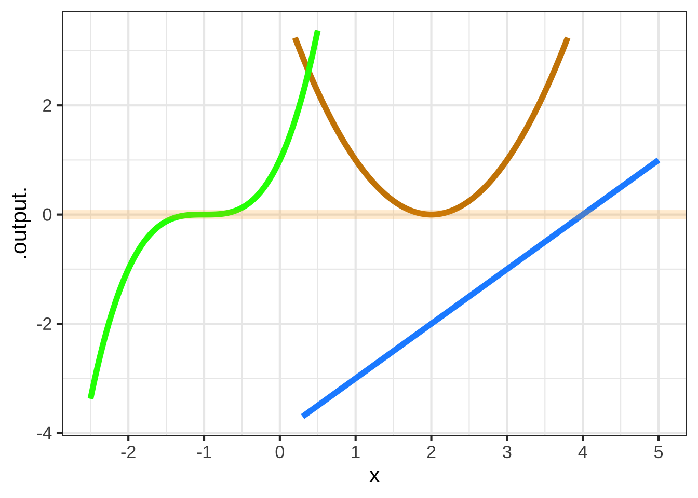

26 Polynomials
A big part of the high-school algebra curriculum is about polynomials. In some ways, this is appropriate since polynomials played an outsized part in the historical development of mathematical theory. Indeed, the so-called “Fundamental theorem of algebra” is about polynomials.31
For modelers, polynomials are a mixed bag. They are very widely used in modeling. Sometimes this is entirely appropriate, for instance the low-order polynomials that are the subject of Chapter 25. The problems come when high-order polynomials are selected for modeling purposes. Building a reliable model with high-order polynomials requires a deep knowledge of mathematics, and introduces serious potential pitfalls. Modern professional modelers learn the alternatives to high-order polynomials, but newcomers often draw on their experience in high-school and give unwarranted credence to polynomials. This chapter attempts to guide you to the ways you are likely to see polynomials in your future work and to help you avoid them when better alternatives are available.
26.1 Basics of polynomials
As you know, a polynomial is a linear combination of a particular class of functions: power-law functions with non-negative, integer exponents: 1, 2, 3, …. The individual functions are called monomials, a word use that echoes the construction of chemical polymers out of monomers; for instance, the material polyester is constructed by chaining together a basic chemical unit called an ester.
In one variable, say \(x\), the monomials are \(x^1, x^2, x^3\), and so on. (There’s also \(x^0\), but that’s better thought of as the constant function.) An n-th order polynomial has monomials up to exponent \(n\). For example, the form of a third-order polynomial is \[a_0 + a_1 x^1 + a_2 x^2 + a_3 x^3\] High-order polynomials are rarely used for multiple inputs because they are verbose and unreliable. Consider the third-order polynomial form in \(x\) and \(y\): \[\underbrace{b_0 + b_x x + b_y y}_\text{first-order terms} + \underbrace{b_{xy} x y + b_{xx} x^2 + b_{yy} y^2}_\text{second-order terms} + \underbrace{b_{xxy} x^2 y + b_{xyy} x y^2 + b_{xxx} x^3 + b_{yyy} y^3}_\text{third-order terms}\] Too many terms! Consequently, we’ll limit this chapter to polynomials in one variable.
The domain of polynomials, like the power-law functions they are made from, is the entire number line: \(-\infty < x < \infty\). But for the purposes of understanding the shape of high-order polynomials, it’s helpful to divide the domain into three parts: a wriggly domain at the center and two tail domains to the right and left of the center.
Figure 26.1: A \(n\)th-order polynomial can have up to \(n-1\) critical points that it wriggles among. A 7-th order polynomial is shown here in which there are six local maxima or minima alternatingly.
Figure 26.1 shows a 7-th order polynomial—that is, the highest-order term is \(x^7\). In one of the tail domains the function value heads off to \(\infty\), in the other to \(-\infty\).
This is always the case with odd-order polynomials: 1, 3, 5, 7, …. For even-order polynomials, the function value in the two tail domains go in the same direction, either both to \(\infty\) (Hands up!) or both to \(-\infty\).
In the wriggly domain in Figure 26.1, there are six argmins or argmaxes. An \(n\)th-order polynomial can have up to \(n-1\) extrema.
Note that the local polynomial approximations in Chapter 25 are at most 2-nd order and so there is at most 1 wriggle: a unique argmax. If the approximation does not include the quadratic terms (\(x^2\) or \(y^2\)) then there is no argmax for the function.
26.2 High-order approximations
We’ve discussed first- and second-order polynomial approximations and their valuable contribution to modeling technique in Chapter 25. From now on, we’ll focus only on polynomials of order three or higher.
The potential attraction of high-order polynomials is that, with their wriggly interior, they can take on a large number of appearances. This chameleon-like behavior has historically made them the tool of choice for understanding the behavior of approximations. That theory has motivated the use of polynomials for modeling patterns in data, but, paradoxically, has shown that high-order polynomials should not be the tool of choice for modeling data. The mathematical background needed for those better tools won’t be available to us until Block 5, when we explore linear algebra.
Let’s start the story before the invention of the linear-algebra tools, when polynomials were well understood.
Polynomial functions lend themselves well to calculations, since the output from a polynomial function can be calculated using just the basic arithmetic functions: addition, subtraction, multiplication, and division. To illustrate, consider this polynomial: \[g(x) \equiv x - \frac{1}{6} x^3\] This is a third-order polynomial, since the highest-order term is \(x^3\). The coefficients have been selected for the purpose of the illustration to be easy to handle by mental arithmetic. For instance, for \(g(x=1)\) is \(5/6\). Similarly, \(g(x=1/2) = 23/48\) and \(g(x=2) = 2/3\). A person of today’s generation would use an electronic calculator for more complicated inputs, but the mathematicians of Newton’s time were accomplished human calculators. It would have been well within their capabilities to calculate, using paper and pencil32, \(g(\pi/4) = 0.7046527\).
Our example polynomial, \(g(x) \equiv x - \frac{1}{6}x^3\), graphed in color in Figure 26.2, doesn’t look like any of our pattern book functions. But, for a small interval around \(x=0\), it has a great similarity to the sinusoid.
Figure 26.2: The polynomial \(g(x) \equiv x -x^3 / 6\) is remarkably similar to \(\sin(x)\) near \(x=0\).
It’s clear from the graph that the approximation is excellent near \(x=0\) and gets worse as \(x\) gets larger. The approximation is poor for \(x \approx \pm 2\). We know enough about polynomials to say that the approximation will not get better for larger \(x\); the sine function has a range of \(-1\) to \(1\), while the left and right tails of the polynomial are heading off to \(\infty\) and \(-\infty\) respectively.
One way to quantify the quality of the approximation is to look at the error, that is the difference between the actual sinusoid and \(g(x)\), that is \({\cal E}(x) \equiv |\strut\sin(x) - g(x)|\). The point of the absolute value used in defining the error is that we’re interested in how far the approximation is from the actual function and not so much in whether the approximation is below or above the actual function. Figure ?? shows \({\cal E}(x)\) as a function of \(x\).
Figure 26.3: The error \({\cal E}(x)\) of \(x - x^3/6\) as an approximation to \(\sin(x)\). Left panel: linear scale. Right panel: log-log scale.
Figure 26.4: The error \({\cal E}(x)\) of \(x - x^3/6\) as an approximation to \(\sin(x)\). Left panel: linear scale. Right panel: log-log scale.
Figure ?? shows that for \(x < 0.3\), the error in the polynomial approximation to \(\sin(x)\) is in the 5th decimal place. For instance, \(\sin(0.3) = 0.2955202\) while \(g(0.3) = 0.2955000\).
That the graph of \({\cal E}(x)\) is a straight-line on log-log scales diagnoses \({\cal E}(x)\) as a power law. That is: \({\cal E}(x) = A x^p\). As always for power-law functions, we can estimate the exponent \(p\) from the slope of the graph. It’s easy to see that the slope is positive, so \(p\) must also be positive.
The inevitable consequence of \({\cal E}(x)\) being a power-law function with positive \(p\) is that \(\lim_{x\rightarrow 0} {\cal E}(x) = 0\). That is, the polynomial approximation \(x - \frac{1}{6}x^3\) is exact as \(x \rightarrow 0\).
Throughout this book, we’ve been using straight-line approximations to functions around an input \(x_0\). The slope of the tangent-line approximation is the derivative of the function at \(x_0\). We can always choose the coefficients of a polynomial approximation to be at least as good as the tangent-line approximation. For a function \(f(x)\) that we want to approximate at \(x=x_0\) with a polynomial, just start with the polynomial \[g(x) = f(x_0) + \partial_x f(x_0) [x-x_0]\] Notice that \(g(x=x_0) = f(x=x_0)\), and \(\partial_x g(x=x_0) = \partial_x f(x=x_0)\): the approximation matches the function’s value and its derivative at \(x_0\). One way to construct a high-order polynomial approximation is to follow the same logic: structure \(g(x)\) such that \(g(x_0) = f(x_0)\) and \(\partial_x g(x=x_0) = \partial_x f(x=x_0)\), \(\partial_{xx} g(x=x_0) = \partial_{xx} f(x=x_0)\), and so on for the higher order derivatives.
\[\newcommand{\bigstrut}{{\rule[-.3\baselineskip]{0pt}{1.5\baselineskip}}\]
The table below compares the function value and the derivatives at input \(x = x_0 = 0\) for \(\sin(x)\) to the polynomial approximation \(g(x)\equiv x - \frac{1}{6} x^3\).
Order | \(\sin(x)\) derivative | \(x - \frac{1}{6}x^3\) derivative ——|———————-|——————————– 0 | \(\sin(x) \left.{\Large\strut}\right|_{x=0} = 0\) | \(\left( 1 - \frac{1}{6}x^3\right)\left.{\Large\strut}\right|_{x=0} = 0\) 1 | \(\cos(x) \left.{\Large\strut}\right|_{x=0} = 1\) | \(\left(1 - \frac{3}{6} x^2\right) \left.{\Large\strut}\right|_{x=0}= 1\) 2 | \(-\sin(x) \left.{\Large\strut}\right|_{x=0} = 0\) | \(\left(- \frac{6}{6} x\right) \left.{\Large\strut}\right|_{x=0} = -1\) 3 | \(-\cos(x) \left.{\Large\strut}\right|_{x=0} = -1\) | \(- 1\left.{\Large\strut}\right|_{x=0} = -1\) 4 | \(\sin(x) \left.{\Large\strut}\right|_{x=0} = 0\) | \(0\left.{\Large\strut}\right|_{x=0} = 0\)
The first four derivatives of \(x - \frac{1}{6} x^3\) exactly match, at \(x=0\), the first four derivatives of \(\sin(x)\).
The polynomial \(h(x) \equiv a_0 + a_1 [x-x_0]^1 + a_2 [x-x_0]^2 + \cdots + a_n [x-x_0]^n\), with coefficients \(a_0, a_1, a_2, ...\) selected to match the function value \(f(x=x_0)\) as well as the first \(n\) derivatives \(\partial_x f(x=x_0)\), \(\partial_{xx} f(x=x_0)\), \(\partial_{xxx} f(x=x_0)\), … is called the Taylor polynomial approximation to \(f(x)\) around the input \(x_0\).
Example 26.1 Find the 4th-order Taylor polynomial approximation to \(f(x) = e^x\) around \(x=0\).
We know it will be a 4th order polynomial: \[\text{Taylor}(x) \equiv a_0 + a_1 x + a_2 x^2 + a_3 x^3 + a_4 x^4\] The exponential function is particularly nice for examples because the function value and all it’s derivatives are identical: \(e^x\). So \[f(x= 0) \color{magenta}{=} \partial_x f(x=0) \color{magenta}= \partial_{xx} f(x=0) \color{magenta}= \partial_{xxx} f(x=0) \color{magenta}= \partial_{xxxx} f(x=0) \color{magenta}= 1\] The function value and derivatives of \(\text{Taylor}(x)\) at \(x=0\) are: \[ \text{Taylor}(x=0) = a_0\\ \,\\ \partial_{x}\text{Taylor}(x=0) = a_1\\ \,\\ \partial_{xx}\text{Taylor}(x=0) = 2 a_2\\ \,\\ \partial_{xxx}\text{Taylor}(x=0) = 2\cdot3\cdot a_3\\ \,\\ \partial_{xxxx}\text{Taylor}(x=0) = 2\cdot3\cdot4 \cdot a_4 \] Matching these to the exponential evaluated at \(x=0\), we get \[a_0 = 1\\ \,\\ a_1 = 1\\ \,\\ a_2 = \frac{1}{2}\\ \,\\ a_3 = \frac{1}{2 \cdot 3}\\ \,\\ a_4 = \frac{1}{2 \cdot 3 \cdot 4} \] So the 4th-order Taylor polynomial approximation to the exponential at \(x=0\) is \[g(x) = 1 + x + \frac{1}{2} x + \frac{1}{2\cdot 3} x^2 + \frac{1}{2\cdot 3} x^3 +\frac{1}{2\cdot 3\cdot 4} x^4\]
Figure 26.5 shows the exponential function \(e^x\) and its 4th-order Taylor polynomial approximation near \(x=0\):
Figure 26.5: The 4th-order Taylor polynomial approximation to \(e^x\) arount \(x=0\)
The polynomial is exact at \(x=0\) but the error \({\cal E}(x)\) grows with increasing distance from \(x=0\):
Figure 26.6: The error from a 4th-order Taylor polynomial approximation to \(e^x\) around \(x=0\).
From the plot of \(\log_{10} {\cal E}(x)\) versus \(\log_{10} | x |\) in Figure 26.6you can see that the error grows from zero at \(x=0\) as a power-law function. Measuring the exponent of the power-law from the slope of the graph on log-log axes give \({\cal E}(|x|) = a |x|^5\). This is typical of Taylor polynomials: for a polynomial of degree \(n\), the error will grow as a power-law with exponent \(n+1\). This means that the higher is \(n\), the faster \(\lim_{x\rightarrow x_0}{\cal E}(x) \rightarrow 0\). On the other hand, since \({\cal E}_x\) is a power law function, as \(x\) gets further from \(x_0\) the error grows as as \(\left(x-x_0\right)^{n+1}\)
Exercise 26.05:  k8H2vs
k8H2vs
In this exercise, you’re going to approximate a sinusoid \(sin(x)\) with polynomials of order 3, 5, and 7. The approximation should go exactly through the coordinate pair \((x_0=0, y=0)\) shown as a bright dot on the graph. Notice that the approximation is exacty tangent to the sinusoid at \(x_0 = 0\): the approximating line goes straight through the dot and continues pretty much through the center of the thick line marking the sinusoid, until the sinusoid curves away from the straight line.
-
Start with sketching in a third-order polynomial that approximates the sinusoid near \(x_0=0\). The general formula for a third order polynomial is \[\text{third}(x) \equiv \overbrace{\underbrace{b_0 + b_1 x^1}_\text{first-order polynomial} + b_2 x^2}^\text{second-order polynomial} + b_3 x^3\] To turn the first-order approximation into a third-order approximation algebraically, you would need to choose the coefficients \(b_2\) and \(b_3\). You want to choose the best possible \(b_2\) and \(b_3\) to stay close to the sinusoid. Of course, you could take the lazy person’s approach and choose \(b_2 = b_3 = 0\). If you did that, you would have the first-order polynomial. Here’s the important point: the best third-order polynomial will not be any worse than the first-order polynomial, but it can be better!
Remember what you know about the shape of third-order polynomials:
- One tail will go up, the other down.
- There can be both an argmin and an argmax.
Repeat (1), sketching out a 5th-order polynomial. Again, one tail will go up and the other down. But now there can be two argmaxes and two argmins that alternate along the \(x\) axis: min, max, min, max.
-
One more time, sketching now a 7th-order polynomial. Just like the first-, third-, and fifth-order polynomial, for the 7th one tail will go up and the other down. There can be as many as three argmaxes and three argmins. They will alternate: between any two argmaxes, there will be one argmin.
Exercise XX.XX: uebqnO
Least square fits
## Warning: Removed 60 row(s) containing missing values (geom_path).## Warning: Removed 44 row(s) containing missing values (geom_path).
Exercise XX.XX: 682lsB
Here are graphs of three power-law functions (that is, \(\left[x-x_0\right]^n\)) with different values of \(x_0\):
Question A For the blue function, what is \(x_0\)?
-2 ︎✘ -1 ︎✘ 0 ︎✘ 1 ︎✘ 2 ︎✘ 3 ︎✘ 4 Right-oh! 5 ︎✘
Question B For the blue function, what is the order of the polynomial?
0 ︎✘ 1 Good. 2 ︎✘ 3 ︎✘ 4 ︎✘ 5 ︎✘
Question C For the red function, what is \(x_0\)?
-2 ︎✘ -1 ︎✘ 0 ︎✘ 1 ︎✘ 2 Right! 3 ︎✘ 4 ︎✘ 5 ︎✘
Question D For the red function, what is the order of the polynomial?
0 ︎✘ 1 Correct. 2 ︎✘ 3 ︎✘ 4 ︎✘ 5 ︎✘
Question E For the green function, what is \(x_0\)?
-2 ︎✘ -1 ︎✘ 0 ︎✘ 1 ︎✘ 2 ︎✘ 3 ︎✘ 4 Right! 5 ︎✘
Question F For the green function, what is the order of the polynomial?
0 ︎✘ 1 ︎✘ 2 ︎✘ 3 Right-oh! 4 ︎✘ 5 ︎✘Exercise XX.XX: ecdVKx
For a function \(f(x)\) and its derivatives \(f^{(1)}(x)\), \(f^{(2)}(x)\), … the Taylor polynomial \(p(x)\) centered on \(x_0\) is
\[p(x) \equiv f(x_0) + \frac{f^{(1)}(x_0)}{1!} (x - x_0)^1 + \frac{f^{(2)}(x_0)}{2!} (x - x_0)^2 + \cdots\]
A Taylor polynomial, like all polynomials, is a linear combination of basic functions.
Question A Which of these are the basic functions being linearly combined in a Taylor polynomial?
-
\(f(x), f^{(1)}(x), f^{(2)}(x), \ldots\) ︎✘ You won’t find any of these in the definition of \(p(x)\) given above.
-
\(f(x_0), f^{(1)}(x_0), f^{(2)}(x_0), \ldots\) ︎✘ These are not functions of \(x\). They are numbers computed by evaluating a function at the center point \(x_0\).
-
\(f(x_0), \frac{f^{(1)}(x_0)}{1!}, \frac{f^{(2)}(x_0)}{2!}, \ldots\) ︎✘ These are not functions of \(x\). They are numbers computed by evaluating a function at the center point \(x_0\).
- \((x-x_0), (x - x_0)^2, \ldots\) Excellent! These are the only places where the variable \(x\) appears in the Taylor formula.
As you recall, the Taylor polynomial for \(e^x\) has an especially lovely formula: \[p(x) = 1 + \frac{x}{1!} + \frac{x^2}{2!} + \cdots\]
Question B In the above formula, the center \(x_0\) does not appear. Why not?
- Having a center is not a requirement for a Taylor polynomial. ︎✘ This is wrong. All Taylor polynomials are expansions around some fixed center value.
- There is a center, \(x_0 = 1\), but terms like \(x_0 x^2\) were simplified to \(x^2\). ︎✘ Look again at the Taylor formula at the start of this section. The basis functions are \(x-x_0, (x-x_0)^2, \ldots\), not \(x_0 x, x_0 x^2, \ldots\)
- There is a center, \(x_0 = 0\), but the terms like \((x-x_0)^2\) were simplified to \(x^2\). Right-oh!
Consider this Taylor polynomial: \[p(x) = e + \frac{e}{1!} (x-1) + \frac{e}{2!} (x-1)^2 + \cdots\] A neophyte instructor is convinced that \(p(x)\) is a Taylor expansion of \(e^x\).
Question C Could the neophyte be right?
- No, a polynomial doesn’t have functions like \(e\). ︎✘ \(e\) is not a function, it’s just a number, 2.718282….
- Yes. The center is \(x_0 = 1\). Excellent!
- Not really. The formula suggests that the center is \(x_0=1\) but the coefficients are wrong. ︎✘ The coefficients are right.
Consider the function \(f(x) \equiv (x - 3)^2\).
Question D Using ordinary algebra, \(f(x)\) can be expanded as \((x^2 - 6 x -9)\). Is \[p(x) = -9 - 6 x + x^2\] a Taylor polynomial expansion of \(f(x)\)?
- Yes, with a center at \(x_0 = 0\) Excellent! As you can tell from solving, this works for this specific polynomial, but is uncommon among polynomials.
- Yes, with a center at \(x_0 = 3\) ︎✘
- No, because there are no factorials involved ︎✘ The factorials are part of the coefficients.
Here’s the Taylor polynomial expansion of \(\sin(x)\) about a center \(x_0\): \[p(x) = 1/2 - \frac{\sqrt{3}/{2}}{2!} (x - x_0)^2 + \frac{1/2}{4!} (x - x_0)^4 + \cdots\] Question E What’s the numerical value of \(x_0\)? (Hint: Remember that the coefficients involve the function and its derivatives evaluated at \(x_0\) as described at the very top of this section.)
\(\pi/6\) Good. \(\pi/3\) ︎✘ \(\pi/2\) ︎✘ \(\pi\) ︎✘Question F Find \(f(1)\) exactly for your 4th-order polynomial approximation to \(e^x\). Which of these is it?
2 8/12 ︎✘ 2 17/24 Right-oh! 2 35/48 ︎✘ 2 7/10 ︎✘
Question G Again using \(f()\) for the 4th-order polynomial approximation to \(e^x\), subtract \(f(1)\) from \(e^1\). The result will be near zero. To quantify how near, count the number of leading zeros after the decimal point. How many zeros are there?
1 ︎✘ 2 Right-oh! 3 ︎✘ 4 ︎✘
Question H Repeat the above calculation, but include the 5th- and 6th-order terms (that is, \(a_5 x^5\) and \(a_6 x^6\)) when programming the polynomial computer. Subtract the new \(f(1)\) from \(e^1\). How many leading zeros are there after the decimal point?
1 ︎✘ 2 ︎✘ 3 Right-oh! 4 ︎✘
Exercise XX.XX: KmDiXI
Recall the formula for the coefficients \(a_n\) to approximate a function \(f(x)\):
\[a_n = \frac{f^{(n)}(x_0)}{n!}\] where \(f^{(n)}\) means the "nth derivative. For simplicity, we’ll look at examples where \(x_0 = 0\), so that the polynomial itself will be
\[p(x) = a_0 x^0\!\!\!\!\!\! \mbox{✘✘ }\ + a_1 x^1 + a_2 x^2 + a_3 x^3 + \cdots\] We crossed out the \(x^0\) because that’s equal to 1.
Let’s construct the polynomial coefficients for the function \(f(x) = e^x\) around \(x_0 = 1\). Start with the sequence of derivatives \(f^{(n)}(0)\).
Question A Which of these gives the sequence \(f^{(n)}(0)\) (where \(f(x) = e^x\)) for \(n=0, 1, 2, 3, ...\) ?
- 0, 0, 0, 0, 0, … ︎✘
- 1, 1, 1, 1, 1, … Excellent!
- 1, 2, 3, 4, 5, … ︎✘
- 0, 1, 2, 3, 4, … ︎✘
Question B Which of these gives the sequence \(n!\) for \(n=0, 1, 2, 3, ...\) ?
- 0, 0, 0, 0, 0, … ︎✘
- 1, 2, 3, 4, 5, … ︎✘
- 0, 1, 2, 3, 4, … ︎✘
- 1, 1, 2, 6, 24, … Right-oh!
Question C One of these is not the polynomial expansion for \(e^x\). Which one?
-
\(1 + x + \frac{x^2}{2} + \frac{x^3}{6} + \frac{x^4}{24} + \cdots\) ︎✘
-
\(1 + x + \frac{x^2}{2} + \frac{x^3}{3} + \frac{x^4}{4} + \cdots\) Correct.
- \(1 + x + \frac{x^2}{2!} + \frac{x^3}{3!} + \frac{x^4}{4!} + \cdots\) ︎✘
Now let’s construct the polynomial expansion of \(\sin(x)\) using the same technique: Find the sequence of derivatives \(f^{(n)}\), then divide each of them by \(n!\) to construct the \(a_n\) coefficients.
Question D Which of these gives the sequence \(f^{(n)}(0)\) (where \(f(x) = \sin(x)\)) for \(n=0, 1, 2, 3, ...\) ? (Remember, \(x_0\) will be set to zero.)
- 0, 1, -1, 1, -1, … ︎✘
- 1, 0, -1, 0, 1, … ︎✘
- 0, 1, 0, -1, 0, … Correct.
- 1, 0, 0, -1, 1, … ︎✘
Question E One of these is the polynomial expansion for \(\sin(x)\). Which one?
-
\(1 + x + \frac{x^2}{2} + \frac{x^3}{6} + \frac{x^4}{24} + \cdots\) ︎✘
-
\(x - \frac{x^3}{3} - \frac{x^5}{5} + \cdots\) ︎✘
-
\(x - \frac{x^3}{6} - \frac{x^5}{120} + \cdots\) Excellent!
- \(1 + x - \frac{x^3}{6} - \frac{x^5}{24} + \cdots\) ︎✘
Question F Take the correct polynomial expansion for \(\sin(x)\) from the previous question and differentiate it term by term to get the polynomial expansion for \(\cos(x)\). Which one of these is right
-
\(1 - \frac{x^2}{2} + \frac{x^3}{6} - \frac{x^4}{24} + \cdots\) ︎✘
-
\(1 - \frac{x^2}{2} - \frac{x^4}{4} + \cdots\) ︎✘
-
\(1 - \frac{x^2}{6} + \frac{x^4}{24} - \cdots\) Excellent!
- \(1 - \frac{x^2}{2} + \frac{x^4}{120} + \cdots\) ︎✘
Finally, let’s construct the polynomial expansion of the function \(f(x) \equiv \frac{1}{1-x}\) at \(x_0 = 0\).
Question G Which of these gives the sequence \(f^{(n)}(0)\) (where \(f(x) = 1/(1-x)\)) for \(n=0, 1, 2, 3, ...\) ? (Remember, \(x_0\) will be set to zero.)
- 1, 1, 1, 1, 1 … Right!
- 1, -1, 1, -1, 1, … ︎✘
- 0, 1, 0, 1, 0, … ︎✘
- 1, 0, 1, 0, 1, … ︎✘
Question H What are the coefficients \(a_n\) in the polynomial expansion of \(1/(1-x)\), for \(n = 0, 1, 2, 3, 4, ...\)
- 1, 1, 1, 1, 1, … ︎✘
- 1, 1/2, 1/6, 1/24, 1/120, … ︎✘
- 1, 1, 1/2, 1/6, 1/24, … Excellent!
- 1, 1, 2!, 3!, 4! ︎✘
Exercise XX.XX: IlNSF0
source("www/polycomp.R")We’re all busy people these days and nobody has the time to compute an infinite number of coefficients in order to program the polynomial computer. So, we’ll have to use just a few coefficients. How many is enough?
For example, the coefficients for \(e^x\) (around \(x_0 = 0\)) are \(1, 1, 1/2, 1/6, 1/24, 1/120, 1/720, 1/5040, 1/40320, 1/362880, ...\) Factorials get big fast!
The sandbox shows a simple comparison of the polynomial approximation to the actual exponential function. it plots the magnitude of the error \(|e^x - p(x)|\) on a log-log scale.
p <- poly_comp(x0 = 0, 1, 1, 1/2, 1/6, 1/24, 1/120)
error_fun <- makeFun(abs(exp(x) - p(x)) ~ x)
slice_plot(error_fun(x) ~ x, domain(x=c(0.01, 10))) %>%
slice_plot(abs(exp(-x) - p(-x)) ~ x, color="orange3") %>%
gf_refine(scale_y_log10(), scale_x_log10()) %>%
gf_labs(y = "Absolute error")Read the graph carefully to make sure you understand what is being displayed.
- It’s easy to think about the “absolute error” scale as indicating the number of zeros after the decimal point in the size of the error. For example
1e-6is 0.000001. The approximation has that much error or less for \(|x| < 0.3\). - We’re using log-log scales because we anticipated that the error would be something like a power law. (Why? Because the first term omitted from the approximation will produce a function \(a_{n+1} x^{n+1}\), a power law. And when a power-law function is plotted on log-log axes, it appears as a straight line) But we can’t graph negative values of \(x\) on a log scale. So we’re plotting both \(p(x)\) and \(p(-x)\) together. The error for negative \(x\) values are plotted in red.
Question A For \(x \approx 2.0\), the magnitude of the error is, to judge from the graph, 1e-1. When written as a decimal number, how many leading zeros are after the decimal point?
-2 ︎✘ -1 ︎✘ 0 Right! 1 ︎✘ 2 ︎✘
Question B For \(x \approx 10.0\), the magnitude of the error is, to judge from the graph, 1e4. What is this when written as a decimal number?
26.3 l’Hopital’s rule
One task for which the polynomial computer is extremely well suited is the resolution of singularities. A singularity is an input for which the function involves division by zero, for instance:
\[g(x) \equiv \frac{\sin(x)}{x}\ \ \ \mbox{at}\ \ \ x=0\]
Since division by zero is undefined, there’s no way to do a numerical computation at \(x=0\). Even computer arithmetic is set up to recognize this:
g <- makeFun(sin(x)/x ~ x)
g(0)## [1] NaNThe output NaN stands for “not a number.” It is as if the computer is
throwing up its hands and saying, “I don’t know what to do with this.”
Actually, the computer doesn’t get so frustrated at all such division-by-zero problems, for instance
h <- makeFun(1/x ~ x)
h(0)## [1] InfThe output Inf is also not a number, but here the computer is willing
to say that whatever 1/0 might be, it’s very large: infinity.
Why does the computer make a distinction between the kind of
divide-by-zero in \(\sin(x)/x\) and the kind in \(1/x\). The answer is that
the first function involves a numerator, \(\sin(x)\) that will also be
zero when \(x=0\). It’s the zero-over-zero that prompts the NaN
response:
0 / 0## [1] NaNThe numerator must literally be zero. Being very close to zero doesn’t cut it.
0.000000000000000000000000000000000000000000000001 / 0## [1] InfThe polynomial computer provides another approach to sorting out what \(\sin(x)/x\) and similar functions might be at \(x=0\). And the key thing is the word “approach.” The sandbox carries out the \(\sin(x)/x\) calculation for \(x\) very small but not zero. See what you get.
x <- 0.00000001
sin(x) / xAlthough \(\sin(x) / x\) is not defined at \(x=0\), it is defined everywhere else. Recall that the idea of a limit is to find a value to stand in for the undefined \(\sin(0)/0\) by making \(x\) very small and seeing what you get. If you get something sensible for very small \(x\), and get the same thing for even smaller \(x\), then we have a reasonable claim for what value to insert for \(\sin(x)/x\).
Question C Using the sandbox above, add more zeros to \(x\) to make it even smaller. You can stop when you get tired. Does \(\sin(x)/x\) evaluate to something sensible for such tiny \(x\)? If so, what value?
- 0 ︎✘
- 1/2 ︎✘
- 1 Right!
- answer varies with \(x\) as \(x\) gets smaller ︎✘
Saying, “so small that I got tired typing the zeros” is not a convincing definition of “small” to a mathematician. For example, 0.0000000000000001 parsec (a unit of length) seems small but it is equivalent to about 10 feet—no so small. Mathematicians want you to take “small” to the limit, an arbitrarily large number of zeros, and when you’re done with that, even more zeros.
Fortunately, R and other computer languages have a scientific notation
that allows you just to name the number of zeros you want after the
decimal point. For instance 1e-2 is \(0.01\)—one zero. Similarly
1e-20 is \(0.00000000000000000001\), nineteen zeros.
Question D Use the previous sandbox, but this time use scientific notation so that you can look at \(x\) as small as 1e-31 (30 zeros) or even smaller. Starting at x = 1e-31, calculate sin(x)/x. Then double the number of zeros, keep on doubling the number of zeros. The result will continue to be 1 … until it eventually becomes NaN. How many zeros are there in the x that produces NaN as the answer to sin(x)/x?
127 ︎✘ 191 ︎✘ 323 Correct. 379 ︎✘ 1281 ︎✘
What’s happening here has more to do with the nature of computers than
the nature of numbers. Computers (in the manner they are ordinarily
programmed) use packets of bits to represent numbers, and the chips have
been engineered to make those bit packets respond to arithmetic
operations as if they were the numbers they represent. A typical
computer number, like 0.001, uses 64 bits in a special, standard format.
Since there is a finite number of bits, there is a largest possible
non-Inf number and a smallest possible non-zero number. According to
the IEEE standard for “floating-point” arithmetic the largest non-Inf
number is around 1e300 and the smallest non-zero number is around
1e-320. This failure to behave like genuine mathematical numbers is
called “overflow” (for large numbers which turn into Inf) and
“underflow” (for small numbers which turn into 0).
Question E Play around with numbers in the format 1e300, 1e301 and so on until you find the smallest 1e??? that prints as Inf. Similarly, try numbers in the format 1e-320 and 1e-321 until you find the largest one that prints out as exactly zero. What are those two numbers?
-
1e305and1e-322︎✘
-
1e306and1e-323︎✘
-
1e308and1e-324Good.
-
1e309and1e-327︎✘
The polynomial computer doesn’t have any problem with overflow or underflow. The key to success is to write the Taylor polynomial for functions such as \(\sin(x)\) or \(x\) or \(x^2\) near \(x_0 = 0\). Such polynomials will always look like:
\[f(x) = a_1 x^1 + a_2 x^2 + a_3 x^3 + \cdots\]
What’s special here is that the a_0 term does not need to be included
in the polynomial, since \(f(0) = 0\).
Question F One of these functions has a Taylor polynomial at \(x_0 = 0\) the does need a non-zero \(a_0\) term. The other’s don’t. Which function needs the non-zero \(a_0\) term?
sin() ︎✘ tan() ︎✘ atan() ︎✘ acos() Excellent!
These zero divided by zero problems (like \(\sin(x) / x\)) always involve a ratio of two functions (\(\sin(x)\) and \(x\) here) that don’t need the \(a_0\) term in their Taylor series around \(x_0 = 0\). That makes them just a little bit simpler.
What’s more important than simpler is that, for the expansion of such functions to study the limit at \(x \rightarrow 0\), we only need the **first terms with a non-zero coefficient* \(a_k\) to represent the function with complete accuracy.
Why? Consider the 2nd-order Taylor polynomial \(a_1 x + a_2 x^2\). If we are to be able to safely disregard the \(a_2\) term it is because that term, for small \(x\) is much, much smaller than the \(a_1 x\) term. And we can always choose non-zero \(x\) to make this so.
For instance, suppose our polynomial were \(x + 100 x^2\). For \(x=0.1\), the first and second terms are the same size; we need them both for accuracy. For \(x=0.01\), the second term is 1/100 the size of the first term, maybe we don’t need the second term so much. You can always make \(x\) so small that anyone will be satisfied that the second term is utterly negligible compared to the first.
Here’s the method:
Suppose you have a function \(f(x) \equiv u(x)/v(x)\) where \[\lim_{x\rightarrow 0} u(x) = 0\ \ \ \mbox{and}\ \ \ \lim_{x\rightarrow 0} v(x) = 0\] Given this, \(f(0)\) is not defined. But we can ask whether there is a sensible value that can be plugged in in place of \(f(0)\) that will cause the modified \(f()\) to be continuous at \(x=0\).
Step 1: Write the Taylor polynomial expansion around \(x-0 = 0\) for both \(u(x)\) and \(v(x)\). If both expansions have a non-zero first coefficient, you can stop there. Now we have:
\[u(x) \approx a_1 x\\ v(x) \approx b_1 x\] where \(a_1 = \partial_x u(0)\) and \(b_1 = \partial_x v(0)\).
Step 2: Divide the polynomial (really just linear!) expansion of \(u()\) by the expansion of \(v()\) to get
\[\lim_{x\rightarrow 0}\frac{u(x)}{v(x)} = \lim_{x\rightarrow 0} \frac{a_1 x}{b_1 x} = \frac{a_1}{b_1}\]
That’s the answer, \(a_1/b_1\), at least when \(b_1 \neq 0\). We’ll come back to that case later.
Question G For \(\lim_{x\rightarrow 0} \sin(x) / x\), what are \(a_1\) and \(b_1\)?
-
\(a_1 = 1\) and \(b_1 = 1\) Right!
-
\(a_1 = \pi\) and \(b_1 = \pi\) ︎✘
-
\(a_1 = -1\) and \(b_1 = -1\) ︎✘
- \(a_1 = 0\) and \(b_1 = -1\) ︎✘
Sometimes the singularity is at some non-zero \(x\). For instance, \[h(x) \equiv \frac{x^2 - 16}{x - 4}\] The divide-by-zero comes into play when \(x=4\). So is there a sensible value to plug in for \(h(4)\) to replace the singularity.
Here, write your Taylor polynomials around \(x_0 = 4\), the location of the singularity. We’ll get:
\[x^2 - 16 = a_1 (x-4) + a_2 (x-4)^2 + \cdots\\ x - 4 = b_1 (x-4)\] Using Taylor’s formula for coefficients we’ll get \[a_1 = \partial_x (x^2 - 16)\left.\right|_{x=4} = 2x\left.\right|_{x=4} = 8\\ b_1 = \partial_x (x - 4) = 1 \]
Consequently, \(\lim_{x\rightarrow 4} \frac{x^2 - 16}{x - 4} = 8\)
We’ve been discussing ratios of functions where the ratio cannot be calculated at the singularity using simply the limits of the functions approaching that singularity. (For instance \(\lim_{x\rightarrow 0} \sin(x) = 0\) and \(\lim_{x\rightarrow 0} x = 0\), but knowing this does not tell us what \(\lim_{x\rightarrow 0} \frac{\sin(x)}{x}\) will be. These are called “indeterminate forms.” As you’ve seen, if we know more about the functions than merely their individual limits, we can sometimes resolve the indeterminacy. Here we’re doing that by writing each function as a low-order polynomial.
The indeterminate form \(\lim_{x\rightarrow 0} \frac{\sin(x)}{x}\) might be said to have the “shape” 0/0. But 0/0 is just a notation about the limits of the two individual functions. There are indeterminate forms with other shapes: \[\frac{0}{0}\ \ \ \ \ \ \frac{\infty}{\infty}\ \ \ \ \ \ 0\, {\infty\ \ \ \ \ 0^0\ \ \ \ \ \ \infty^0\ \ \ \ \ \ 1^\infty\ \ \ \ \ \ \infty - \infty}\] Keep in mind that something like \(0 \infty\) is not a multiplication problem but rather shorthand for \(u(x) v(x)\) where \(\lim_{x\rightarrow x_0} u(x) = 0\) and \(\lim_{x\rightarrow x_0} v(x) \rightarrow \infty\).
There is a variety of algebraic tricks to try to transform these different shapes of indeterminate forms into a ratio of functions, each of which goes to zero at the relevant \(x_0\). Once that’s done, you can apply the method described above.
Indeterminate forms have been a bonanza for the author of calculus book exercises, who can write an large number of examples, many of which have never been seen in the wild.
One shortcut that that works in practice is to make a graph of the indeterminate form near the singularity. If the limit as \(x\) approaches the singularity is a finite number, you can read off the result from the graph.
In the sandbox below, the function \(g(x)\equiv x \ln(x)\) is set up. This function has a singularity at \(x=0\). Examine the plot and determine where the function value is going as you walk along the graph to the singularity.
You may have to zoom in on the domain to get a clear read of the function value at \(x=0\) singularity.
Question H From the graph, determine \(\lim_{x\rightarrow 0} x \ln(x()\). Choose the correct answer.
-0.2 ︎✘ 0 Right-oh! 0.1 ︎✘ 0.5 ︎✘
Conventionally, the relationship \[\lim_{x\rightarrow x_0} \frac{u(x)}{v(x)} = \lim_{x\rightarrow x_0} \frac{\partial_x u(x)}{\partial_x v(x)}\] is called “L’Hopital’s Rule” after the author of the very first Calculus textbook where the rule was first published. Here’s the title page from the second edition of 1716.
Brooke Taylor (1685-1731), a near contemporary of Newton, published his work on approximating polynomials in 1715. Wikipedia reports: “[T]he importance of [this] remained unrecognized until 1772, when Joseph-Louis Lagrange realized its usefulness and termed it ‘the main [theoretical] foundation of differential calculus.’”
Figure 26.7: Brook Taylor Source
{kind=link}
Taylor’s work preceded by about a century the development of techniques for working with data. One of the pioneers in these new techniques was Carl Friedrich Gauss (1777-1855), after whom the gaussian function is named. Gauss’s techniques are the foundation of an incredibly important statistical method that is ubiquitous today: least squares. Least squares provides an entirely different way to find the coefficients on approximating polynomials (and an infinite variety of other function forms). The R/mosaic fitModel() function for polishing parameter estimates is based on least squares. In Block 5, we’ll explore least squares and the mathematics underlying the calculations of least-squares estimates of parameters.
Due to the importance of Taylor polynomials in the development of calculus, many students assume their use extends to constructing models from data. They also assume that third- and higher-order monomials are a good basis for modeling data. Both these assumptions are wrong. Least squares is the proper foundation for working with data.